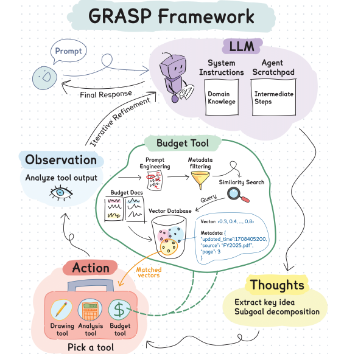
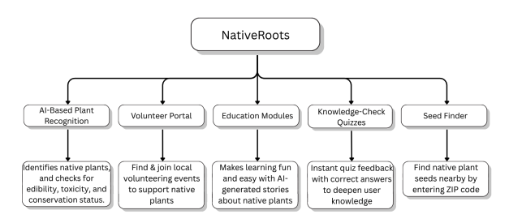
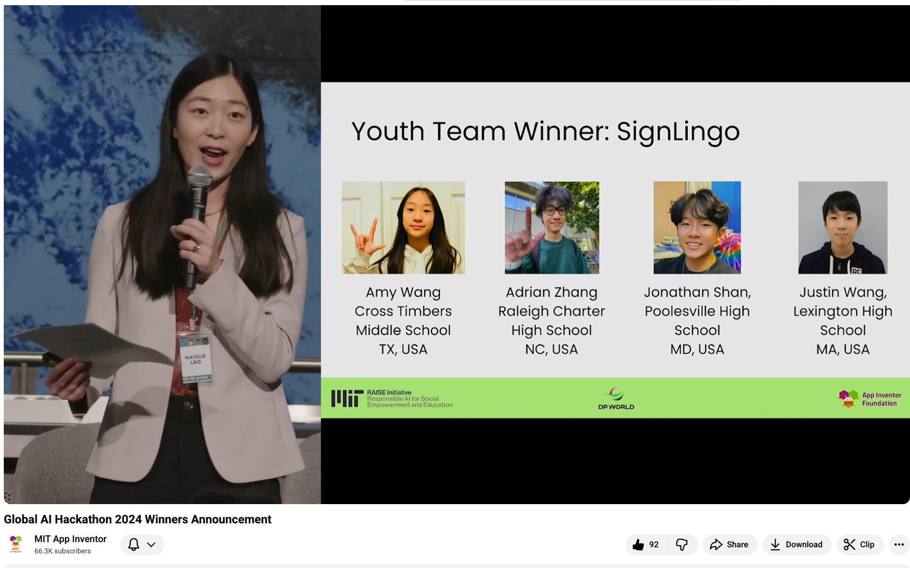
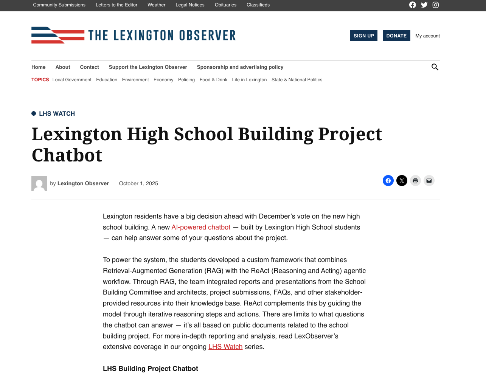
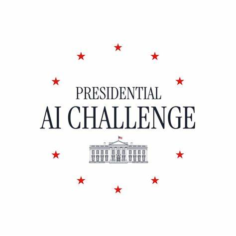
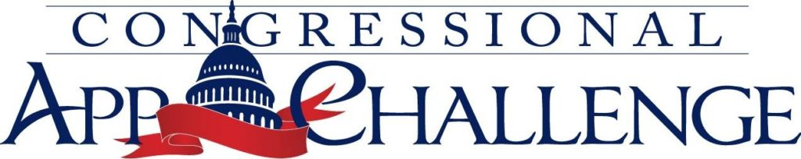
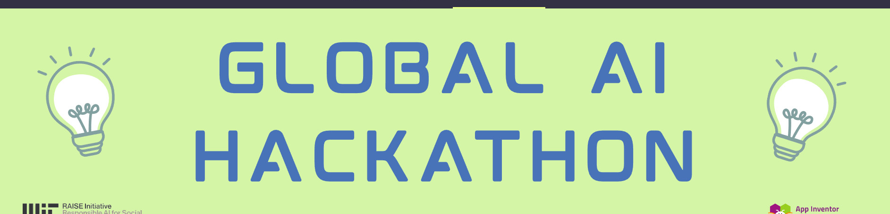

Portfolio
-

GRASP: Municipal Budget AI Chatbots for Enhancing Civic Engagement
2024 IEEE International Conference on Big Data, Washington DC, USA
research & publication
-

AI for Community: A Student-Led Initiative Promoting Sustainability Awareness Through App Development and Community Engagement
2025 MIT AI & Education Summit
research & publication
-

SignLingo - MIT Global AI Hackathon 2024 - Youth Team Winner
App Developement
-

Lexington High School Building Project Chatbot
App Developement
Research
Research Experience
-
Student Researcher — Harvard Medical School & Brigham and Women's Hospital
June 2024 — PresentAI-Driven Detection of Subjective Cognitive Decline
- Developed an NLP pipeline using Python, Llama 3.1, and GPT-4o to classify cognitive concerns from unstructured clinical notes.
- Analyzed 11,000+ patient concern texts against expert-labeled validation data, achieving an F1 score above 0.8 and contributing to a manuscript currently under review.
Latency Patterns in Stevens-Johnson Syndrome and Toxic Epidermal Necrolysis
- Co-led a systematic review of 756 SJS/TEN case reports to study latency between drug exposure and severe adverse reactions.
- Performed statistical analysis in R, including Kruskal-Wallis testing, and contributed to data curation, visualization, and manuscript preparation.
-
Research Assistant — Columbia University Irving Medical Center
August 2025 — PresentMachine Learning for Solid Cancer Incidence in Atomic-Bomb Survivors
- Evaluated XGBoost, CatBoost, TabICL, stacking ensembles, and conformal prediction against traditional Poisson radiation-risk models using Life Span Study data.
- Helped adapt machine learning models to account for person-years of exposure and assess whether flexible AI models could recover meaningful radiation dose-response patterns.
Causal Machine Learning: Atomic-Bomb Survivor Mortality Study
- Applied Double/Debiased Machine Learning and Causal Forest methods to Life Span Study mortality data to evaluate radiation dose-response relationships for all-cause and solid tumor mortality.
- Used model validation, bootstrap simulations, and refutation tests to assess robustness and identify possible subgroup differences in radiation sensitivity.
Causal Machine Learning: U.S. Nuclear Worker Cohorts
- Applied causal machine learning methods to longitudinal data from Oak Ridge, Hanford, and multi-facility nuclear worker cohorts to study chronic low-dose occupational radiation exposure.
- Used Longitudinal Modified Treatment Policies and Causal Forests with survival weighting to evaluate whether prolonged exposure had a detectable causal effect on all-cause mortality.
Manuscripts Under Review
-
Chen, T., Wang, J., Varghese, S., Tian, J., Amariglio, R. E., Zhou, L., Marshall, G. A., & Wang, L. "Cognitive Concerns in Subjective Cognitive Decline: Insights from Clinical Notes"
-
Varghese, S., Wang, J., Blumenthal, K. G., Kroshinsky, D., Phillips, E. J., Zhou, L., & Wang, L. "Exploring Latency Patterns in Stevens-Johnson Syndrome and Toxic Epidermal Necrolysis: A Systematic Review of Case Reports from the Literature"
-
Shuryak, I., Liu, Z., Wang, E., Wang, J., Wu, X., Ullrich, R. L., Brenner, A. V., Misumi, M., & Brenner, D. J. "Causal Machine Learning for Radiation Epidemiology: A Proof-of-Principle Application to Mortality in Japanese Atomic-Bomb Survivors"
-
Shuryak, I., Wang, E., Wang, J., Vasishtha, R., Sondhi, A., & Brenner, D. J. "Causal Machine Learning for Occupational Radiation Exposure and Mortality in U.S. Nuclear Worker Cohorts"
Conference Presentations
-
"A Design Framework for Dual-Use AI Voices in Elder Care" — MIT App Inventor Global Education Summit, 2026
-
"AI for Community: A Student-Led Initiative Promoting Sustainability Awareness Through App Development and Community Engagement" — MIT AI & Education Summit, 2025
-
"GRASP: Municipal Budget AI Chatbots for Enhancing Civic Engagement" — IEEE Big Data Conference, 2024
App Dev
-

Presidential AI Challenge 2026 — 1st Place High School State Champion, Massachusetts
Built a nonpartisan civic engagement chatbot that answered 2,500+ resident inquiries ahead of the Lexington High School building project tax-exemption vote.
-

Congressional App Challenge 2025 — 1st Place Winner, Massachusetts
Created an AI-powered senior care app designed to improve safety and companionship for older adults; invited to Capitol Hill for the national House of Code.
-

MIT Global AI Hackathon 2024 — 1st Place Youth Team Winner
Developed a bidirectional ASL translation mobile app to support communication with the Deaf and hard-of-hearing community.
Fencing
Rating & Ranking
Rating: A26
Club: Cavalier Fencing Club
National Rankings: Division I — 77th | Junior — 59th
Key Results — USA Fencing National Men's Epee
Bronze Medal — 2025 USA Fencing Junior Olympics, Cadet
32nd — 2026 February NAC, Division I; top 4 nationally among Class of 2027 fencers
57th — 2025 November NAC, Division I; top 8 nationally among Class of 2027 fencers
48th — 2025 October NAC, Division I; top 8 nationally among Class of 2027 fencers
49th — 2026 Summer Nationals and July Challenge, Junior
15th — 2026 Summer Nationals and July Challenge, Division IA
22nd — 2025 Summer Nationals and July Challenge, Division IA
Photography
Writing
Lexington High School Musket Newspaper — STEM/ Sports Editor
Planned, assigned, and edited 100+ articles for accuracy, clarity, and publication quality.
Managed section deadlines and covered school events through firsthand reporting and interviews.
-
Scholastic Art & Writing Awards — Silver Keys in Poetry and Journalism
2026 -
Youth Development Resource Consortium — Writing Mentor & Competition Judge
2022–2025Mentored 50+ students through competitive writing boot camps.
Served on the judging panel for the annual writing competition for three consecutive years.
Resume
Education
-
Lexington High School
2023 — 2027GPA (unweighted): 4.0 | SAT: 1570 (Math: 790, EBRW: 780)
Research Experience
-
Student Researcher — Harvard Medical School & Brigham and Women's Hospital
June 2024 — PresentDeveloped NLP pipelines using Python and LLMs to classify cognitive concerns from clinical notes; conducted statistical analysis in R for a systematic review of SJS/TEN case reports.
-
Research Assistant — Columbia University Irving Medical Center
August 2025 — PresentApplied causal machine learning methods (Double ML, Causal Forests) and ensemble models to radiation epidemiology datasets from atomic-bomb survivors and U.S. nuclear worker cohorts.
Honors & Awards
-
MIT App Inventor Global Education Summit — Best Paper, Youth Category
2026 -
Presidential AI Challenge — 1st Place High School State Champion, Massachusetts
2026 -
Congressional App Challenge — 1st Place Winner, Massachusetts
2025 -
MIT Global AI Hackathon — 1st Place Youth Team Winner
2024 -
Massachusetts State & Regional Science and Engineering Fair — 2x Qualifier
2025 & 2026 -
Scholastic Art & Writing Awards — Silver Keys in Poetry and Journalism
2026 -
Conrad Challenge — Conrad Innovator
2026
Leadership & Community Service
-
Lexington High School Fencing Team — Captain
2024 — PresentMentored younger fencers, supported competition preparation, and fostered a collaborative and disciplined team culture.
-
Youth STEAM Initiative — Core Developer & Grant Proposal Lead
2023 — PresentAuthored successful grant proposals (Microsoft Nonprofit Grant, Community Endowment of Lexington). Built a civic-engagement AI chatbot and developed the official Cary Library fundraising platform, supporting a $750K renovation campaign.
-
Helpful Hands — Founder & President
2020 — PresentFounded a youth-driven initiative providing clothing to 50+ families in local shelters through two drives per year. Established a two-year partnership with the Lexington MLK Jr. Committee.